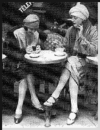
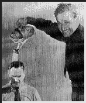
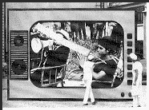
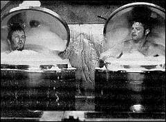
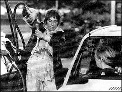
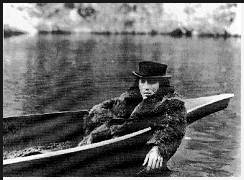

Contents | Features | Reviews | News | Archives | Store

Contents | Features | Reviews | News | Archives | Store
 |
22nd Seattle
International |
 On the documentary front, Greta Schiller's Paris Was a Woman account of the circle of talented expat is an exquisite women that formed around the household of Gertrude Stein and Alice B. Toklas in Paris, and their love and business affairs during the 1920s. It's the type of beautifully-constructed and researched documentary that could simply run for three hours. Some legitimate quibbles might be raised over the film's almost-exclusive emphasis upon lesbian artists (Lee Miller, one of the token heteros, is represented only in a single photograph), but this has to be one of the best documentary films of the year, as it concentrates its energies upon a subset of the distaff side of expat life, one that has been inexcusably neglected.
Historical accounts of filmmakers are also prevalent this year. Who Killed Pasolini? (directed by Marco Tullio Giordana, and adapted from his book) is an overwhelming docudramatic account of the mystery surrounding the death of the politically and artistically controversial Italian poet and director, killed on November 2nd, 1975, by a youth who claimed that Pasolini had made indecent advances toward him.
Despite some lapses into pure melodrama, the film marshals a considerable amount of persuasive evidence to suggest that Pasolini's murder, despite the aura of gay-bashing that surrounded it, was not without political motivations or multiple co-conspirators; a few months before his death, Pasolini wrote an angry essay in which he noted that the corruption in Italian politics reached into the highest circles, and demanded that even those in such positions should not be immune from arrest and prosecution. This was an extremely provocative act under normal political circumstances, but during a time in which Italy was being beset by political violence both from far right and far left, it must have seemed like sedition to those in thrall to extremist ideologies. Under the circumstances, it was much simpler for officials to demote the killing to the status of a 'lovers' quarrel' and sweep it under the rug.
 Wild Bill: Hollywood Maverick is a badly-needed recounting of the career of the ultimate Hollywood iconoclast, William Wellman (click the photo to see the full picture...). Though Wellman was the director of such cinematic classics as Wings (1927), The Public Enemy (1931), The Ox-Bow Incident (1943) and Battleground (1949), the film correctly intimates that Wellman's reputation, by and large, has been all but forgotten. The film also provides wry insights into the circumstances surrounding Wellman's first big break. In keeping with Wellman's reputation, the story itself is risque and atypical, or perhaps it is simply more truthful than the 'official' versions of how Hollywood types attain power. It involves Samuel Goldwyn, General John 'Black Jack' Pershing and a Paris brothel, and I'll leave it at that. Much praise is due to producer William Wellman, Jr., who gave director Todd Robinson carte blanche in creating this fascinating portrait. The narration is provided in impeccable style by Alec Baldwin, who may be in search of another career after his most recent and rather mediocre effort, Heaven's Prisoners.
Coming on the heels of the one hundredth anniversary of the first public screenings of film is Sarah Moon's Lumière and Company, a compilation of short films made by contemporary filmmakers (the participants in this project included such luminaries as Spike Lee and Yhang Zimou). Their task, since they choose to accept it (sorry, I'm getting ready for Mission: Impossible at the end of the week) was to make a film with one of the Lumière Brothers' original cameras.
This meant, for the most part, that each film would have to be shot within the confines of one take (they were given three attempts) and only asynchronous sound tracks could accompany the final project. Moreover, the films could be no longer than fifty-two seconds in running time, because of the camera's capacity. The results are as varied as the filmmakers themselves, but, more importantly, the films often have an unintentional effect of revealing heretofore hidden facets of their makers (Zimou's segment, shot on the Great Wall of China, demonstrates a delightfully subversive and playful sense of humor).
Sadly, in some cases, the films also tend to separate directors with talent from those whose careers are built on hype. The viewer can decide who belongs in what category. Moon's film is a touching tribute to cinema history, but why does she have to keep asking rather silly questions such as "Is cinema mortal?" Some advice for Ms. Moon: go into any film archive of your choosing, look at the number of pre-1951 films sitting in cold storage, their nitrate bases deteriorating by the minute, desperately awaiting the millions of dollars needed to restore them before they turn into inflammable goo or powder, realize that hell will freeze over long before the majority of them can be saved, and then reformulate the question to distinguish between the act of filmmaking and corporate indifference to the final product. As a final touch, I would then pose the question to Anges Varda, Jacques Demy's widow, before running for cover.
And now, to love stories. The Horseman on the Roof gives us the preternaturally lovely Juliette Binoche and the preternaturally handsome Olivier Martinez in a swashbuckling tale about a tenacious cholera epidemic and the love that develops between a noblewoman and a handsome, dashing revolutionary (is there any other kind?) who race from city to city in an attempt to beat the plague and to locate the lady's husband. From the same director responsible for 1991's Cyrano (Jean-Paul Rappeneau), Horseman boasts breathtaking cinematography and the occasional vestige of witty dialogue (such as Martinez's character proclaiming that "Cholera avoids me like the plague"). The entire experience is marred somewhat by a rather treacly ending, one which seems to drag on forever.
From Belgian filmmaker Frank Van Passel comes his feature-film debut, Manneken Pis, a quirky love story between a reserved restaurant worker and a spirited streetcar driver (the film's title comes from the name of the streetcar stop where the two first meet). The twist in this love story comes from the fact that the young restaurant worker believes himself to be responsible for the death of his parents some eight years earlier and therefore is incapable of expressing his feelings to his lady love. Just for good measure, the plot also includes a busybody landlady, embittered over her husband's death in a V-2 raid some fifty years earlier. This bizarre stew of repressed bitterness and thwarted love might be intriguing, if the characters weren't written to be so morose and selfish that all they can inspire in the audience is indifference to their individual and collective plights.
A different type of love story is Michael Winterbottom's electrifyingly perverse Butterfly Kiss, with Amanda Plummer as a sadomasochistic lesbian serial killer and Saskia Reeves as her dim-witted and reluctant accomplice in crime. At times, the narrative structure threatens to wander as aimlessly as the roadways upon which Plummer's character wreaks her havoc, but Plummer's performance is masterful and chilling, starting out on a high note and simply never allowing the audience an opportunity to catch its breath as she piles outrage upon outrage.
An even stranger type of love story comes from Jim Jarmusch's jet-black Western, Dead Man, which, as an account of life in the Old West, seems less of a sardonic counterpoint to Stagecoach and more of a rather uncomfortably accurate accounting of the state of affairs in some frontier towns before 'the blessings of civilization' set in.  I confess to not being much of a Jarmusch fan, having rather unpleasant memories of films that consisted of long takes of incoherent and presumably metaphysical babblings taking place in fifth-rate hotel rooms, but I liked this film, not least of all because of its wonderful high-contrast black-and-white cinematography. The performances by Johnny Depp and Gary Farmer are low-key but immaculate, the sight of Robert Mitchum is always a treat, and the dialogue crackles with an abundance of malicious wit, but it was especially fun to see Iggy Pop in pioneerwoman garb.
Next Week: Perhaps the strangest love story of all, as Valerie Solanas attempts to rectify an unrequited love for her artistic 'genius' in I Shot Andy Warhol; a bunch of losers take a one-way ticket to Palookaville; the small-town machinations in Dadetown; and Bobcat Goldthwait as a psychopathic bank robber in Back to Back.
Contents | Features | Reviews | News | Archives | Store
Copyright © 1999 by Nitrate Productions, Inc. All Rights Reserved.